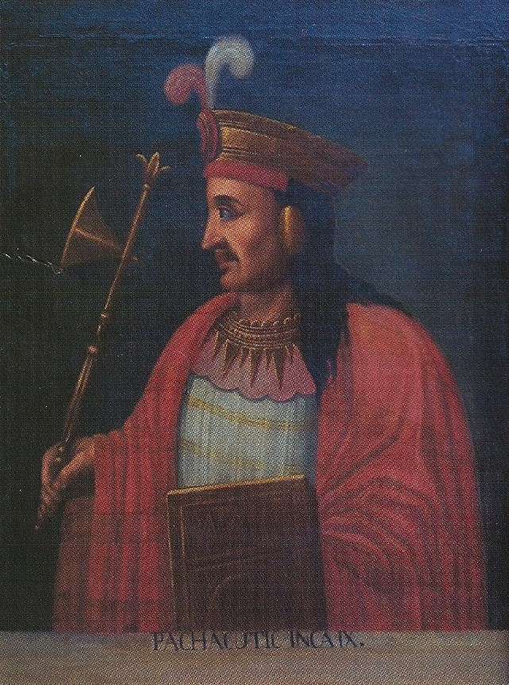
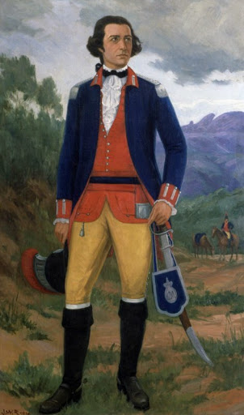

|
A história da América do Sul é profundamente enraizada na grandiosidade de seus povos originários e na incansável luta por independência, muito bem representadas por essas quatro lideranças. A jornada começa antes mesmo da chegada dos europeus, com Pachacútec, o formidável imperador que transformou o modesto Reino de Cusco no colossal Império Inca, expandindo territórios pelos Andes e sendo o provável idealizador da majestosa Machu Picchu.
|
 |
Juana Azurduy |
 |
Pachachútec |
 |
Tiradentes |
 |
Túpac Amaru II |
|
Séculos depois, já sob as duras correntes da colonização espanhola, o líder indígena Túpac Amaru II levantou-se no Peru, comandando a maior rebelião anticolonial das Américas em uma tentativa heroica de defender seu povo da exploração extrema. Esse mesmo grito por justiça ecoou no Brasil através de Tiradentes, o grande mártir da Inconfidência Mineira, que sonhou e deu a vida por uma república livre das pesadas cobranças da coroa portuguesa. Por fim, rompendo de forma radical as barreiras do seu tempo, Juana Azurduy pegou em armas e montou a cavalo para liderar tropas nas guerras de independência entre a Bolívia e a Argentina, imortalizando-se como um símbolo máximo da bravura feminina e da libertação sul-americana. |
.png)